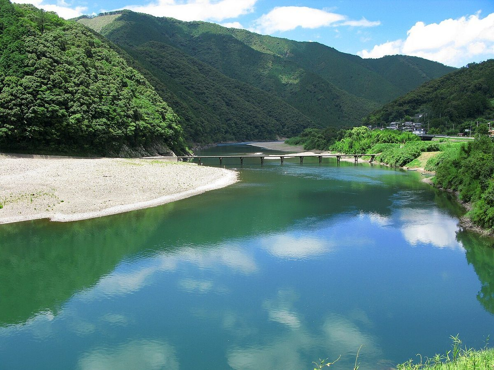
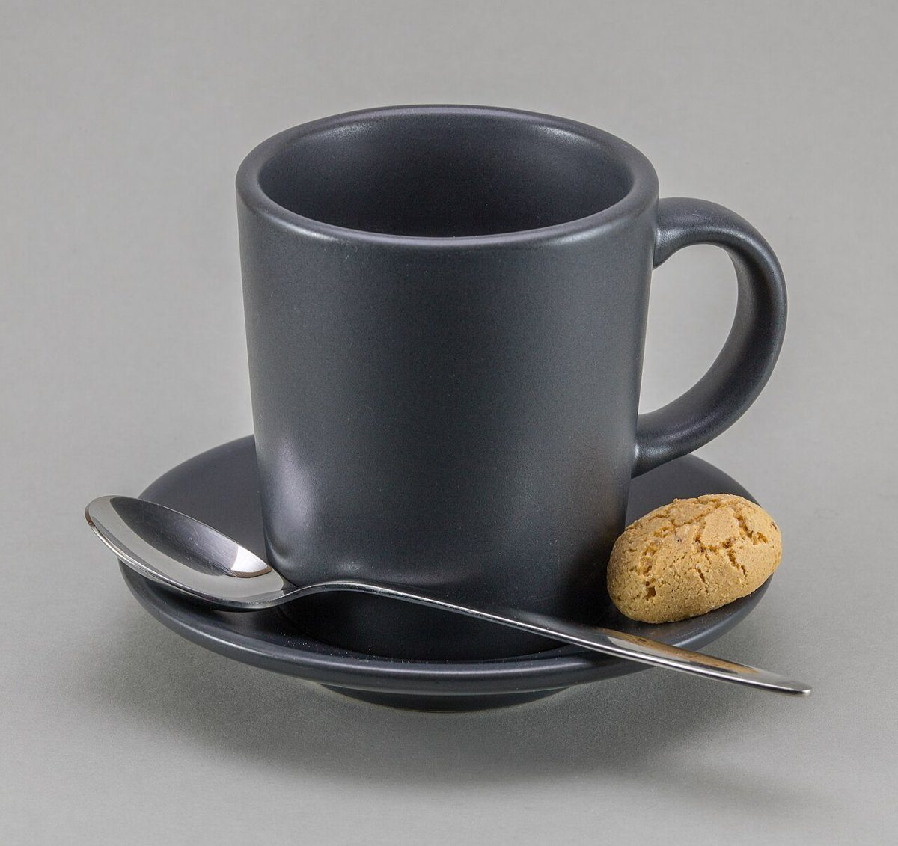

口コミ
以下は制作側が作成したイメージ例であり、実際のお客様の声ではありません。
- イメージ例
忙しい日のあいだに、ゆっくりコーヒーを飲める時間があったらいいなと思います。
- イメージ例
仕事や家事の合間に、少しだけ立ち寄って一息つけたらいいなと思います。
- イメージ例
友人と会話を楽しみながら、のんびり過ごせる場所になるといいなと思います。


実際のお店の様子はInstagramでご確認ください
掲載の写真はフリー素材のイメージです。店舗の実際の写真ではありません(他地域で撮影されたもの、撮影地が不明なものを含みます)。